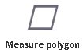
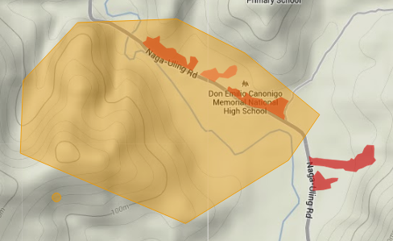
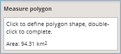

This tool enables the user to measure areas of drawn polygons in square kilometers.

To measure the area of any polygon on the map, activate the measuring tool by clicking on it. The tool turns red and a small orange circle appears around the mouse cursor.
Measuring starts by a single click on the map. Draw the polygon you want to measure. The polygon is finished by a double click.

After activation of the measuring tool, a small window with the measured area also appears.

This window can be moved anywhere over the application window by dragging it.
Both the drawn line and small window disappear after deactivation of the measuring tool by clicking on it again.